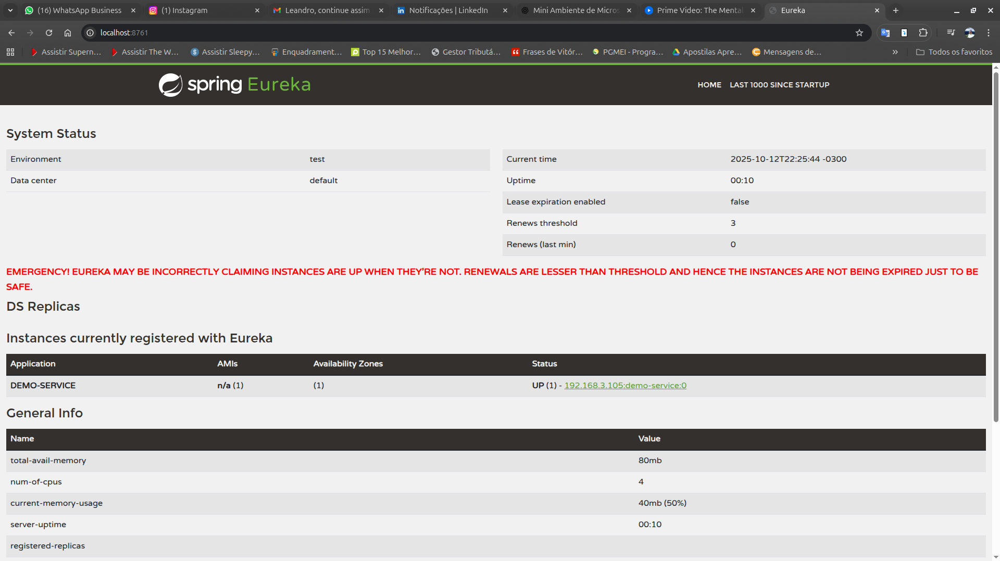
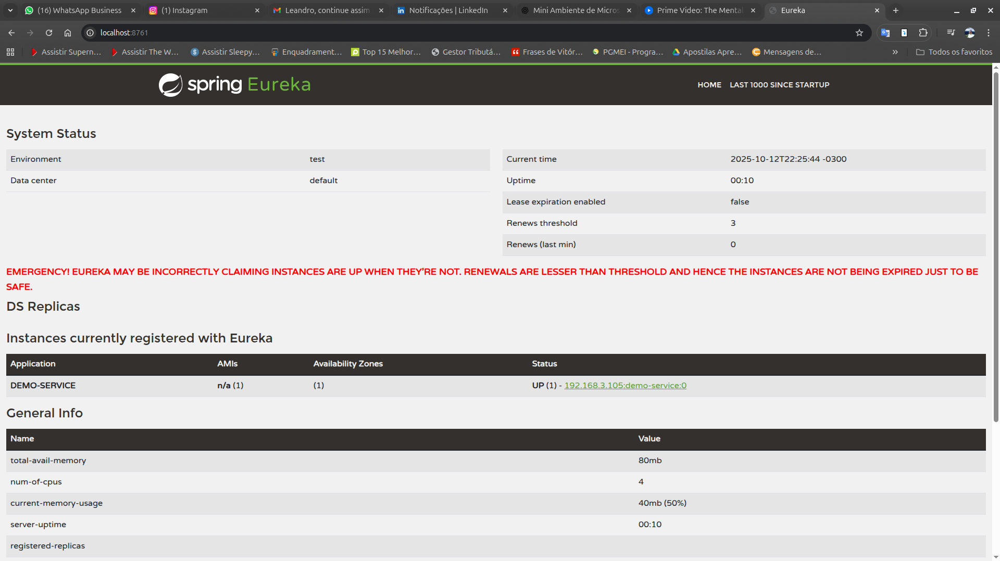

Microstack Spring
An educational microservices environment built with Spring Cloud, demonstrating key concepts of distributed systems architecture.
Project Overview
 

Microstack Spring is a microservices foundation built with Spring Cloud. The project provides a scalable, production-ready architecture ideal for learning and implementing distributed architecture concepts.
Key Components
Config Server (Port: 8888)
Centralized configuration server that manages all services configurations. Configurations are stored in the config-repo directory, enabling dynamic updates without service restarts.
Eureka Server (Port: 8761)
Service discovery server that registers and monitors all microservices. Features a web interface accessible at http://localhost:8761 for service status monitoring.
API Gateway (Port: 8080)
Single entry point for all services, implementing dynamic routing based on registered services. Built with Spring Cloud Gateway to provide advanced routing and filtering capabilities.
Demo Service (Port: 8081)
Example service demonstrating complete integration with Config Server and Eureka. Serves as a foundation and reference for creating new services in the ecosystem.
Technical Stack
Architecture Overview
[Client] -> [API Gateway (8080)] -> [Services (8081+)]
⬆
[Eureka (8761)] ← [Config Server (8888)]
Getting Started
Prerequisites
- Docker and Docker Compose
- Java 21
- Maven
Running the Project
Execute the following command to start all services:
docker-compose up --build
Adding New Services
To add a new service to the stack, follow these steps:
1. Create Maven Module
mvn archetype:generate -DgroupId=com.microstack -DartifactId=new-service
2. Add Dependencies
Add to pom.xml:
<dependencies>
<dependency>
<groupId>org.springframework.cloud</groupId>
<artifactId>spring-cloud-starter-netflix-eureka-client</artifactId>
</dependency>
<dependency>
<groupId>org.springframework.cloud</groupId>
<artifactId>spring-cloud-starter-config</artifactId>
</dependency>
</dependencies>
3. Configure Service
Create config-repo/new-service.yml:
server:
port: 8082 # Choose an available port
spring:
application:
name: new-service
4. Docker Integration
Add the service to docker-compose.yml:
new-service:
build: ./new-service
ports:
- "8082:8082"
depends_on:
- config-server
- eureka
5. Create Dockerfile
FROM eclipse-temurin:21-jdk COPY target/*.jar app.jar ENTRYPOINT ["java","-jar","/app.jar"]View Source on GitHub →